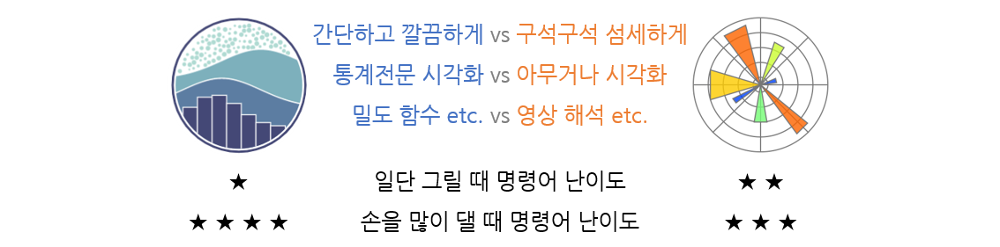
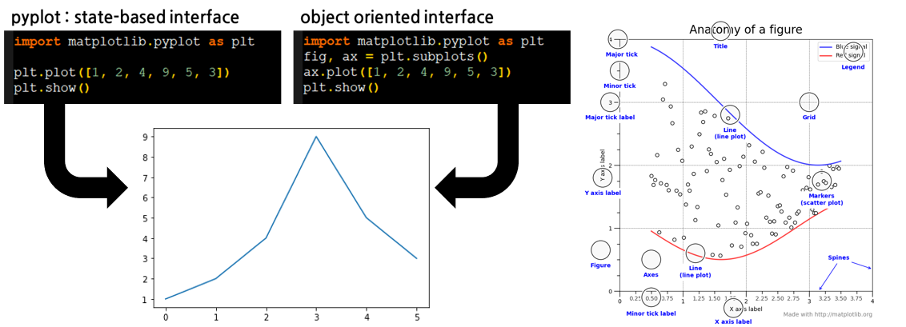
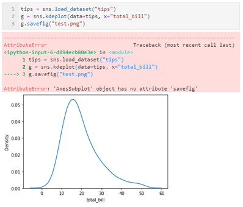
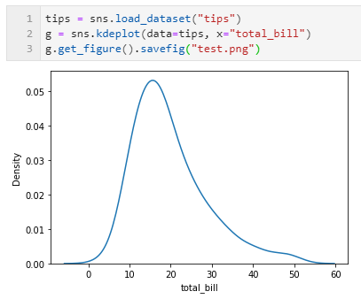
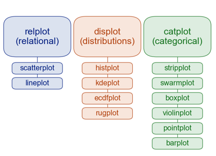
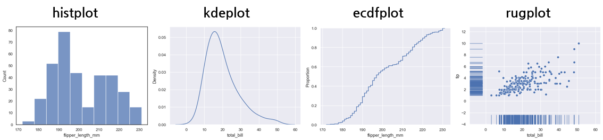
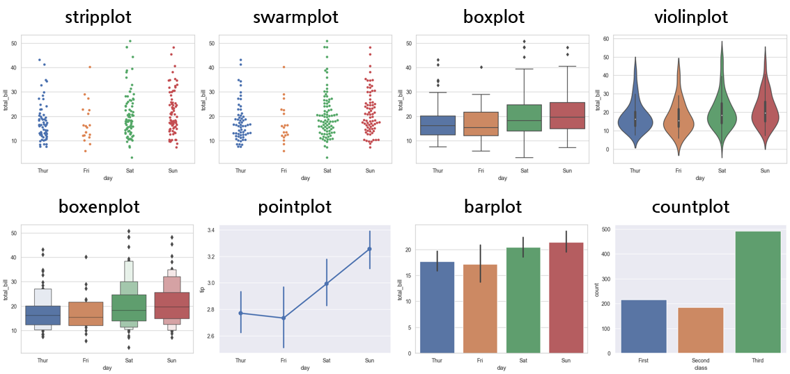
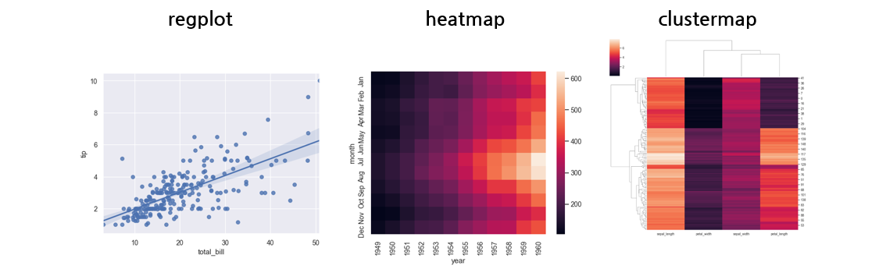
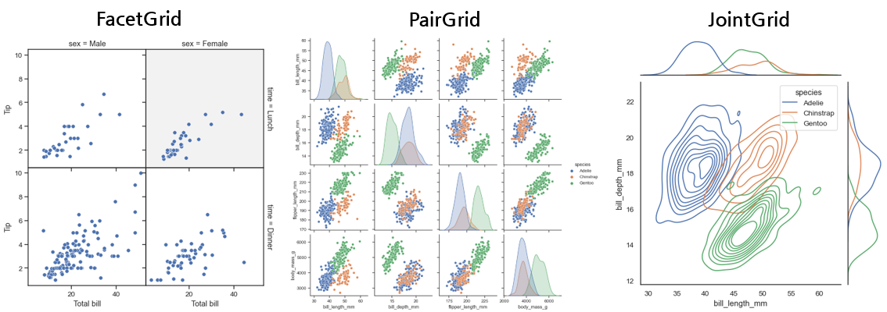

- seaborn 0.11이 나왔습니다.
- 로고도 생겼고, 공식 홈페이지도 대폭 강화되어 문제점으로 지적되던 공식 문서가 상세해졌습니다.
- matplotlib과의 연관성이 선명해졌고 pandas와의 연계기도 잘 드러나 있습니다.
1. Matplotlib vs Seaborn
1.1. matplotlib과 seaborn중 뭘 배워야 하나요?
- 상당히 자주 듣는 질문입니다.
- 두 라이브러리는 일장일단이 명확합니다.
- 간단하게 그릴 때는
seaborn, 폰트나 색상을 많이 손대려면matplotlib승입니다. - 특히 seaborn은 KDE plot같은 통계 그래프를 쉽게 그릴 수 있습니다.

1.2. 왜 그런가요?
- seaborn의 태생이 그렇습니다.
- matplotlib을 쉽게 사용하기 위해 태어났고,
- 통계 시각화에 집중하기 위해 태어났습니다.
- 그래서 데이터 분석에 seaborn이 좋고
- 기능을 일부 희생했기에 그 외의 용도로는 matplotlib이 좋습니다.
1.3. matplotlib 그림과 seaborn 그림은 어떤 관계인가요?
matplotblog: Pyplot vs Object Oriented Interface
seaborn: FacetGrid
질문에 답하기 위해 matplotlib을 잠시 설명하겠습니다.
- matplotlib에서 그림을 그리면
figure와axes를 생성하고axes안에 그림을 그립니다. figure생성은 “도화지를 펼친다”axes생성은 “도화지에 네모 칸을 친다” 로 이해하시면 됩니다.- 명령어 방식에 따라 이 안에 그림을 어떻게 그리는지가 달라집니다.
- matplotlib에서 그림을 그리면
(1) pyplot: 상태기반(state-based) 인터페이스
- 명령어 한 줄이 입력되면 그림이 수정되고 변경된 상태
state가 다음으로 전달됩니다. - 이처럼 명령어가 상태에 반영되어 전달되는 방식을 상태기반(state-based) 인터페이스라고 합니다.
- 따라서 명령어의 순서에 민감하고, 그림 준비 과정이 따로 없어 빠르게 그릴 수 있습니다.
figure와axes는 명령어에 따라 그때그때 자동으로 생성됩니다.
- 명령어 한 줄이 입력되면 그림이 수정되고 변경된 상태
- (2) object oriented: 객체지향 인터페이스
- 그림을 그리기 전에 틀을 다 갖춰놓고 시작합니다.
- 도화지 크기는 얼마고, 어디에 어떤 모양의 틀
axes이 놓일지 정합니다. - 틀마다 이름과 번호를 붙이고 그림을 그리므로 공간으로 제어합니다.
- 그림 여기저기를 하나씩 손대기 좋지만 대충 뚝딱 그리기엔 pyplot보다 느립니다.
- 어떤 방법이건간에 완전히 똑같은 결과물을 만들 수 있습니다.
- matplotlib에서 그려라 명령은
axes를 출력합니다. - 저장해라 같은 명령은
figure에 내려집니다.
- matplotlib에서 그려라 명령은
- seaborn의 그려라 명령은 명령어마다 다릅니다.
- 어떤 명령어는
figure와 유사한FacetGrid를 출력합니다:relplot(),displot(),catplot()
이런 명령어는 출력 결과에.fig나.axes를 붙임으로써 속성에 접근할 수 있습니다. - 어떤 명령어는
axes를 출력합니다:kdeplot(),violinplot()등등.
이런 명령어의 출력 결과는 matplotlibsubplots에 끼워 넣기 좋습니다.
그러나 곧장 저장이 안됩니다.axes객체는savefig메소드가 없기 때문입니다.

- 그런데
axes를 출력하는 명령어도pyplot처럼 행동할 때가 있습니다.figure와axes를 준비하지 않고 단독으로 사용할 때 그렇습니다.
- 어떤 명령어는
- 한마디로 필요에 따라 행동한다는 것입니다.
- 일종의 duck-typing처럼 보이기도 합니다.
- 다만 만들 때는 편한데 손대려면 헷갈린다는 것이 문제입니다.
- 특히 matplotlib의 두 가지 방식에 대한 지식이 부족하면 헷갈리기 딱 좋습니다.
- 이럴 때는 matploltib이 차라리 쉽습니다
- 기존 버전에도 있던, seaborn의 근본적인 문제입니다.
- 이번 0.11 버전에서 공식문서가 강화되어 오류의 원인과 해결책을 알기 쉽게 되었습니다.
- seaborn plot을 제어할 때는 기본 속성을 알아야 혼동이 없습니다.
2. Seaborn Plots

- seaborn은 크게 3가지 형태의 데이터 plot을 지원합니다.
- relational plots :
FacetGrid:relplot()axes:scatterplot(),lineplot()
- distribution plots :
FacetGrid:displot()axes:histplot(),kdeplot(),ecdfplot(),rugplot()- deprecated :
distplot()
- categorical plots :
FacetGrid:catplot()axes:stripplot(),swarmplot(),boxplot(),violinplot(),boxenplot(),pointplot(),barplot(),countplot()
- relational plots :
그리고 크게 2가지 형태의 통계분석 plot을 지원하며
- regresson plots :
FacetGrid:lmplot()axes:regplot(),residplot()
- matrix plots :
FacetGrid: -axes:heatmap(),clustermap()
- regresson plots :
3가지 multi-plot을 제공합니다.
FacetGrid,PairGrid,JointGrid- 이들은 자기 이름을 딴 형태의 데이터 형식을 가집니다.

- 이들은 자기 이름을 딴 형태의 데이터 형식을 가집니다.
3. What’s new in v0.11.0
- Requires keyword arguments
- 대부분의 시각화 함수가 keyword argument를 필수로 입력받습니다.
- keyword argument가 없는 경우 지금은
FutureWarning을 띄우지만 - 앞으로는 error 처리됩니다.
- Modernization of distribution functions
- 분포 시각화 함수들이 완전히 정비되었습니다.
- 새 함수도 생겼고, 인자도 새로 정비되었습니다.
- 튜토리얼도 새로 작성되었으니 한번쯤 따라가봅시다.
- New :
displot(),histplot(),ecdfplot() - Change :
kdeplot(),rugplot(),jointplot(),pairplot() - Deprecation :
distplot()
- New :
- Standardization and enhancements of data ingest
- 입력데이터 처리 코드가 수정되었습니다.
pandas.DataFrame을 조금 더 편하게 쓸 수 있게 되었고,- python
dict형식을 받아들일 수 있습니다.
- 그 외 여러가지가 변했습니다
- 문서가 강화되었고,
set()의 이름이set_theme()로 바뀌었습니다.plot함수들과color부분도 일부 바뀌었습니다.- 상세한 내용은 사용하면서 익힐 필요가 있을 듯 합니다.